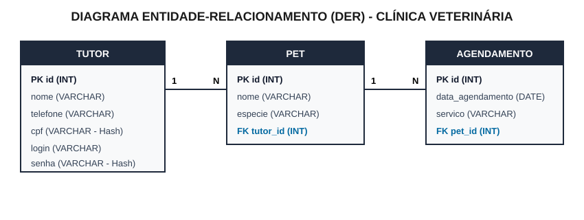

Sistema de Gestão para Clínica Veterinária (Python + FastAPI Ultra-Simples)
Marque abaixo as entregas conforme for concluindo no seu treino para ver sua nota acumulada:
HTMLResponse) e recebe os dados via <form method="post">.sistema/main.py): Sem pastas templates ou arquivos separados.tutor, pet, agendamento): Como o Tutor já possui CPF e Senha criptografados (Item 5.4), usamos a própria tabela tutor para fazer o Login.<table> já tem os <input> e o botão Salvar, economizando telas extras.Pasta_Da_Prova/
├── documentacao.txt (Entrega 1: Requisitos Funcionais e Infraestrutura)
├── der.svg ou der.pdf (Entrega 2: Diagrama Entidade-Relacionamento)
├── saep_db.sql (Entrega 3: Script SQL de criação e população)
└── sistema/ (Entregas 4 a 8: Pasta obrigatória com nome "sistema")
└── main.py (Código-fonte completo do sistema)
documentacao.txt) Vale 3 PontosO edital aceita .txt, .docx ou .pdf. Crie o arquivo documentacao.txt com no mínimo 4 requisitos funcionais (Item 1.1) e a lista de infraestrutura (Item 1.2):
==================================================================== ANEXO 1 - DOCUMENTAÇÃO DE SOFTWARE (SAEP - CLÍNICA VETERINÁRIA) ==================================================================== 1.1 REQUISITOS FUNCIONAIS DO SISTEMA (Mínimo de 4 requisitos) - RF01 (Autenticação e Sessão): O sistema deve permitir o login de usuários validando as credenciais no banco de dados, exibindo mensagem de erro em caso de falha e criando uma sessão autenticada com tempo de expiração. - RF02 (Funcionalidade Principal): O sistema deve exibir na tela principal o nome do usuário autenticado na sessão, disponibilizar links de acesso aos módulos "Tutor", "Pet" e "Agendamento", e oferecer a opção de sair do sistema (logout). - RF03 (Gerenciamento de Tutores e LGPD): O sistema deve permitir cadastrar, listar, buscar por termo, editar e excluir tutores, garantindo que dados sensíveis (CPF e senha) sejam armazenados criptografados no banco de dados conforme a LGPD. - RF04 (Gerenciamento de Pets): O sistema deve permitir o cadastro e a listagem de pets, vinculando obrigatoriamente cada novo pet a um tutor existente no banco de dados. - RF05 (Gerenciamento de Agendamentos): O sistema deve permitir cadastrar agendamentos, atualizar a data de um agendamento existente e listar todos os agendamentos ordenados por data, exibindo os dados completos do pet e do seu respectivo tutor. 1.2 LISTA DE REQUISITOS DE INFRAESTRUTURA - Linguagem de Programação: Python 3 - Framework Web / Backend: FastAPI (executado via servidor ASGI Uvicorn) - Front-end: HTML5 (renderizado pelo próprio FastAPI) - Sistema Gerenciador de Banco de Dados (SGBD): MySQL / SQLite3 - Sistema Operacional: Windows 10 (ou equivalente) - Editor de Código / IDE: Visual Studio Code (VS Code)
Desenhe as 3 tabelas e exporte como imagem ou PDF (Item 1.3):

saep_db.sql) Vale 3 PontosCrie o arquivo saep_db.sql respeitando as chaves estrangeiras (Item 2.1 — Peso 2) e inserindo 3 registros em cada tabela (Item 2.2 — Peso 1):
CREATE DATABASE IF NOT EXISTS saep_db;
USE saep_db;
-- 1. Tabela TUTOR (CPF e Senha em SHA-256 conforme LGPD)
CREATE TABLE IF NOT EXISTS tutor (
id INT AUTO_INCREMENT PRIMARY KEY,
nome VARCHAR(100) NOT NULL,
telefone VARCHAR(20) NOT NULL,
cpf VARCHAR(64) NOT NULL,
login VARCHAR(50) NOT NULL,
senha VARCHAR(64) NOT NULL
);
-- 2. Tabela PET (Com Chave Estrangeira para TUTOR)
CREATE TABLE IF NOT EXISTS pet (
id INT AUTO_INCREMENT PRIMARY KEY,
nome VARCHAR(100) NOT NULL,
especie VARCHAR(50) NOT NULL,
tutor_id INT NOT NULL,
FOREIGN KEY (tutor_id) REFERENCES tutor(id) ON DELETE CASCADE
);
-- 3. Tabela AGENDAMENTO (Com Chave Estrangeira para PET)
CREATE TABLE IF NOT EXISTS agendamento (
id INT AUTO_INCREMENT PRIMARY KEY,
data_agendamento DATE NOT NULL,
servico VARCHAR(100) NOT NULL,
pet_id INT NOT NULL,
FOREIGN KEY (pet_id) REFERENCES pet(id) ON DELETE CASCADE
);
-- POPULAÇÃO INICIAL (3 registros por tabela - Senha '123' em SHA-256)
INSERT INTO tutor (nome, telefone, cpf, login, senha) VALUES
('Ana Silva', '11999990001', '2c624232cdd221771294dfbb310aca000a0df6ac8b66b696d90ef06fdefb64a3', 'ana', 'a665a45920422f9d417e4867efdc4fb8a04a1f3fff1fa07e998e86f7f7a27ae3'),
('Carlos Souza', '11999990002', '6b86b273ff34fce19d6b804eff5a3f5747ada4eaa22f1d49c01e52ddb7875b4b', 'carlos', 'a665a45920422f9d417e4867efdc4fb8a04a1f3fff1fa07e998e86f7f7a27ae3'),
('Mariana Costa', '11999990003', 'd4735e3a265e16eee03f59718b9b5d03019c07d8b6c51f90da3a666eec13ab35', 'mariana', 'a665a45920422f9d417e4867efdc4fb8a04a1f3fff1fa07e998e86f7f7a27ae3');
INSERT INTO pet (nome, especie, tutor_id) VALUES
('Rex', 'Cachorro', 1),
('Mimi', 'Gato', 2),
('Thor', 'Cachorro', 3);
INSERT INTO agendamento (data_agendamento, servico, pet_id) VALUES
('2026-05-20', 'Consulta Geral', 1),
('2026-03-10', 'Vacinação', 2),
('2025-11-05', 'Banho e Tosa', 3);
sistema/main.py Item 5.4 (3 Pontos)Crie a pasta sistema e o arquivo main.py. Comece com este Bloco 1:
import hashlib
import sqlite3
from fastapi import FastAPI, Form, Request
from fastapi.responses import HTMLResponse, RedirectResponse
app = FastAPI()
# ITEM 5.4 (Peso 3): Criptografia de CPF e Senha (LGPD) em 2 linhas!
def criptografar(texto: str) -> str:
return hashlib.sha256(texto.encode("utf-8")).hexdigest()
def get_db():
conn = sqlite3.connect("saep_db.sqlite")
conn.row_factory = sqlite3.Row
conn.execute("PRAGMA foreign_keys = ON")
return conn
def inicializar_banco():
conn = get_db()
conn.executescript("""
CREATE TABLE IF NOT EXISTS tutor (
id INTEGER PRIMARY KEY AUTOINCREMENT,
nome TEXT NOT NULL,
telefone TEXT NOT NULL,
cpf TEXT NOT NULL,
login TEXT NOT NULL,
senha TEXT NOT NULL
);
CREATE TABLE IF NOT EXISTS pet (
id INTEGER PRIMARY KEY AUTOINCREMENT,
nome TEXT NOT NULL,
especie TEXT NOT NULL,
tutor_id INTEGER NOT NULL,
FOREIGN KEY (tutor_id) REFERENCES tutor(id) ON DELETE CASCADE
);
CREATE TABLE IF NOT EXISTS agendamento (
id INTEGER PRIMARY KEY AUTOINCREMENT,
data_agendamento TEXT NOT NULL,
servico TEXT NOT NULL,
pet_id INTEGER NOT NULL,
FOREIGN KEY (pet_id) REFERENCES pet(id) ON DELETE CASCADE
);
""")
if conn.execute("SELECT COUNT(*) FROM tutor").fetchone()[0] == 0:
senha_padrao = criptografar("123")
conn.executemany(
"INSERT INTO tutor (nome, telefone, cpf, login, senha) VALUES (?, ?, ?, ?, ?)",
[
("Ana Silva", "11999990001", criptografar("11111111111"), "ana", senha_padrao),
("Carlos Souza", "11999990002", criptografar("22222222222"), "carlos", senha_padrao),
("Mariana Costa", "11999990003", criptografar("33333333333"), "mariana", senha_padrao),
],
)
conn.executemany(
"INSERT INTO pet (nome, especie, tutor_id) VALUES (?, ?, ?)",
[("Rex", "Cachorro", 1), ("Mimi", "Gato", 2), ("Thor", "Cachorro", 3)],
)
conn.executemany(
"INSERT INTO agendamento (data_agendamento, servico, pet_id) VALUES (?, ?, ?)",
[
("2026-05-20", "Consulta Geral", 1),
("2026-03-10", "Vacinação", 2),
("2025-11-05", "Banho e Tosa", 3),
],
)
conn.commit()
conn.close()
inicializar_banco()
Atende aos itens 3.1 (autenticar e redirecionar), 3.2 (sessão com expiração max_age=1800) e 3.3 (mensagem de erro):
@app.get("/", response_class=HTMLResponse)
def tela_login(erro: str = ""):
msg_erro = f"<p style='color:red;'><b>{erro}</b></p>" if erro else ""
return f"""
<h2>Login - Clínica Veterinária</h2>
{msg_erro}
<form method="post" action="/login">
Login: <input name="login" required> <br><br>
Senha: <input type="password" name="senha" required> <br><br>
<button type="submit">Entrar</button>
</form>
<p><small>Dica de teste: Login <b>ana</b> | Senha <b>123</b></small></p>
"""
@app.post("/login")
def fazer_login(login: str = Form(), senha: str = Form()):
conn = get_db()
user = conn.execute(
"SELECT * FROM tutor WHERE login = ? AND senha = ?",
(login, criptografar(senha)),
).fetchone()
conn.close()
# Item 3.3: Validação caso haja falha de autenticação
if not user:
return RedirectResponse("/?erro=Login+ou+senha+invalidos!", status_code=303)
# Item 3.1 e 3.2: Redireciona e cria sessão com tempo de expiração (1800s = 30 min)
res = RedirectResponse("/principal", status_code=303)
res.set_cookie(key="usuario_sessao", value=user["nome"], max_age=1800)
return res
@app.get("/logout")
def logout():
# Item 4.2: Meio para sair do sistema
res = RedirectResponse("/", status_code=303)
res.delete_cookie("usuario_sessao")
return res
Atende aos itens 4.1 (exibe nome do usuário da sessão), 4.2 (sair do sistema) e 4.3 (acesso a Tutor, Pet e Agendamento):
@app.get("/principal", response_class=HTMLResponse)
def tela_principal(request: Request):
usuario = request.cookies.get("usuario_sessao")
if not usuario:
return RedirectResponse("/?erro=Sessao+expirada.+Faca+login+novamente.", status_code=303)
return f"""
<h2>Sistema Clínica Veterinária - Tela Principal</h2>
<p>Usuário logado: <b>{usuario}</b> | <a href="/logout">Sair do Sistema</a></p>
<hr>
<h3>Menu de Funcionalidades (Item 4.3):</h3>
<ul>
<li><a href="/tutores">Gerenciar Tutores</a></li>
<li><a href="/pets">Gerenciar Pets</a></li>
<li><a href="/agendamentos">Gerenciar Agendamentos</a></li>
</ul>
"""
Atende aos itens 5.1 (listar/excluir), 5.2 (busca por termo), 5.3 (inserir novo tutor), 5.4 (criptografar CPF e senha) e 5.5 (editar tutor):
@app.get("/tutores", response_class=HTMLResponse)
def listar_tutores(busca: str = ""):
conn = get_db()
if busca:
tutores = conn.execute("SELECT * FROM tutor WHERE nome LIKE ?", (f"%{busca}%",)).fetchall()
else:
tutores = conn.execute("SELECT * FROM tutor").fetchall()
conn.close()
linhas = ""
for t in tutores:
linhas += f"""
<tr>
<form method="post" action="/tutores/editar">
<td>{t['id']}<input type="hidden" name="id" value="{t['id']}"></td>
<td><input name="nome" value="{t['nome']}" required></td>
<td><input name="telefone" value="{t['telefone']}" required></td>
<td><input name="login" value="{t['login']}" required></td>
<td><small>{t['cpf'][:12]}...</small></td>
<td>
<button type="submit">Salvar Edição</button>
<a href="/tutores/excluir/{t['id']}">Excluir</a>
</td>
</form>
</tr>
"""
return f"""
<p><a href="/principal">Voltar para Principal</a></p>
<h2>Gerenciamento de Tutores</h2>
<h3>Novo Tutor</h3>
<form method="post" action="/tutores/criar">
Nome: <input name="nome" required>
Telefone: <input name="telefone" required>
CPF: <input name="cpf" required>
Login: <input name="login" required>
Senha: <input type="password" name="senha" required>
<button type="submit">Cadastrar Tutor</button>
</form>
<hr>
<form method="get" action="/tutores">
Buscar por nome: <input name="busca" value="{busca}">
<button type="submit">Buscar</button>
<a href="/tutores">Limpar</a>
</form>
<br>
<table border="1" cellpadding="5">
<tr><th>ID</th><th>Nome</th><th>Telefone</th><th>Login</th><th>CPF (Hash LGPD)</th><th>Ações</th></tr>
{linhas}
</table>
"""
@app.post("/tutores/criar")
def criar_tutor(nome: str = Form(), telefone: str = Form(), cpf: str = Form(), login: str = Form(), senha: str = Form()):
conn = get_db()
conn.execute(
"INSERT INTO tutor (nome, telefone, cpf, login, senha) VALUES (?, ?, ?, ?, ?)",
(nome, telefone, criptografar(cpf), login, criptografar(senha)),
)
conn.commit()
conn.close()
return RedirectResponse("/tutores", status_code=303)
@app.post("/tutores/editar")
def editar_tutor(id: int = Form(), nome: str = Form(), telefone: str = Form(), login: str = Form()):
conn = get_db()
conn.execute("UPDATE tutor SET nome = ?, telefone = ?, login = ? WHERE id = ?", (nome, telefone, login, id))
conn.commit()
conn.close()
return RedirectResponse("/tutores", status_code=303)
@app.get("/tutores/excluir/{id}")
def excluir_tutor(id: int):
conn = get_db()
conn.execute("DELETE FROM tutor WHERE id = ?", (id,))
conn.commit()
conn.close()
return RedirectResponse("/tutores", status_code=303)
Atende ao item 6.1 (inserir novo pet associando-o a um tutor no banco de dados):
@app.get("/pets", response_class=HTMLResponse)
def listar_pets():
conn = get_db()
tutores = conn.execute("SELECT id, nome FROM tutor").fetchall()
pets = conn.execute("""
SELECT p.id, p.nome, p.especie, t.nome AS tutor_nome
FROM pet p JOIN tutor t ON p.tutor_id = t.id
""").fetchall()
conn.close()
opcoes_tutor = "".join([f"<option value='{t['id']}'>{t['nome']}</option>" for t in tutores])
linhas = "".join([
f"<tr><td>{p['id']}</td><td>{p['nome']}</td><td>{p['especie']}</td><td>{p['tutor_nome']}</td></tr>"
for p in pets
])
return f"""
<p><a href="/principal">Voltar para Principal</a></p>
<h2>Gerenciamento de Pets</h2>
<h3>Novo Pet</h3>
<form method="post" action="/pets/criar">
Nome do Pet: <input name="nome" required>
Espécie: <input name="especie" required>
Tutor: <select name="tutor_id" required>{opcoes_tutor}</select>
<button type="submit">Cadastrar Pet</button>
</form>
<hr>
<table border="1" cellpadding="5">
<tr><th>ID</th><th>Nome do Pet</th><th>Espécie</th><th>Tutor Associado</th></tr>
{linhas}
</table>
"""
@app.post("/pets/criar")
def criar_pet(nome: str = Form(), especie: str = Form(), tutor_id: int = Form()):
conn = get_db()
conn.execute("INSERT INTO pet (nome, especie, tutor_id) VALUES (?, ?, ?)", (nome, especie, tutor_id))
conn.commit()
conn.close()
return RedirectResponse("/pets", status_code=303)
Atende aos itens 7.1 (listar agendamentos ordenados por data trazendo dados do pet e do tutor) e 7.2 (atualizar a data de um agendamento):
ORDER BY:ORDER BY strftime('%d', a.data_agendamento) ASCORDER BY strftime('%m', a.data_agendamento) ASCORDER BY strftime('%Y', a.data_agendamento) ASC
@app.get("/agendamentos", response_class=HTMLResponse)
def listar_agendamentos():
conn = get_db()
pets = conn.execute("SELECT id, nome FROM pet").fetchall()
agendamentos = conn.execute("""
SELECT a.id, a.data_agendamento, a.servico,
p.nome AS pet_nome, p.especie AS pet_especie,
t.nome AS tutor_nome, t.telefone AS tutor_telefone
FROM agendamento a
JOIN pet p ON a.pet_id = p.id
JOIN tutor t ON p.tutor_id = t.id
ORDER BY a.data_agendamento ASC
""").fetchall()
conn.close()
opcoes_pet = "".join([f"<option value='{p['id']}'>{p['nome']}</option>" for p in pets])
linhas = ""
for a in agendamentos:
linhas += f"""
<tr>
<td>{a['id']}</td>
<td>
<form method="post" action="/agendamentos/atualizar" style="margin:0;">
<input type="hidden" name="id" value="{a['id']}">
<input type="date" name="data_agendamento" value="{a['data_agendamento']}" required>
<button type="submit">Atualizar Data</button>
</form>
</td>
<td>{a['servico']}</td>
<td>{a['pet_nome']} ({a['pet_especie']})</td>
<td>{a['tutor_nome']} - Tel: {a['tutor_telefone']}</td>
</tr>
"""
return f"""
<p><a href="/principal">Voltar para Principal</a></p>
<h2>Gerenciamento de Agendamentos</h2>
<h3>Novo Agendamento</h3>
<form method="post" action="/agendamentos/criar">
Data: <input type="date" name="data_agendamento" required>
Serviço: <input name="servico" required>
Pet: <select name="pet_id" required>{opcoes_pet}</select>
<button type="submit">Agendar</button>
</form>
<hr>
<table border="1" cellpadding="5">
<tr><th>ID</th><th>Data (Ordenada)</th><th>Serviço</th><th>Dados do Pet</th><th>Dados do Tutor</th></tr>
{linhas}
</table>
"""
@app.post("/agendamentos/criar")
def criar_agendamento(data_agendamento: str = Form(), servico: str = Form(), pet_id: int = Form()):
conn = get_db()
conn.execute(
"INSERT INTO agendamento (data_agendamento, servico, pet_id) VALUES (?, ?, ?)",
(data_agendamento, servico, pet_id),
)
conn.commit()
conn.close()
return RedirectResponse("/agendamentos", status_code=303)
@app.post("/agendamentos/atualizar")
def atualizar_data_agendamento(id: int = Form(), data_agendamento: str = Form()):
conn = get_db()
conn.execute("UPDATE agendamento SET data_agendamento = ? WHERE id = ?", (data_agendamento, id))
conn.commit()
conn.close()
return RedirectResponse("/agendamentos", status_code=303)
cd sistema uvicorn main:app --reload
Depois acesse http://127.0.0.1:8000 no navegador e faça login com ana e senha 123.